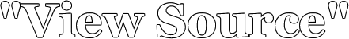

© by Nick McClellan
In the seconds between
A mouse click
the humming of artificial emotion
When a series of words
wrap
to form a sentence
On a page, in a corner
You'll see the text turn
When I ask it to
And the words she said in silence
Are not heard
They are digitized
I would say colors
In places you'll never read
But you'd see white
Your name could mean so many things
If you drop the T
In my world
When a woman frowns
squinting brown eyes
That's my word for you
I'm sorry, but
I only turn this off
at night